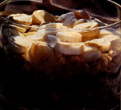

1-1/2 cups mayonnaise
2 teaspoons curry powder
1/4 teaspoon ground coriander
1-1/2 cups orange sections; save any juice
1 bunch fresh spinach, washed, stemmed, and drained
1 medium cucumber, peeled, halved lengthwise, and sliced
1/2 cup chopped green or red onion
1 cup fresh peas, blanched (or 1 10-ounce package frozen peas, thawed)
1 8-ounce can sliced water chestnuts, drained (or 1 cup sliced fresh carrots)
1-1/2 cups diced chicken
8 eggs, hard-cooked and sliced
Combine the mayonnaise, curry powder, and coriander with 2 tablespoons orange juice, mix well, and set aside. Tear the spinach into bite-size pieces and place them in the bottom of a 2" X 9" X 13" casserole, or large glass salad bowl. Layer the remaining ingredients in the order listed, reserving a few orange and egg slices for decoration. Spread the mayonnaise mixture over the top, clear to the edges of the dish. Garnish, cover, and refrigerate overnight. Include a portion of each layer in every serving. Serves 8.
Per serving (with carrots, not water chestnuts): 509 cal., 22 g pro., 12 g carbo., 41 g fat, 35 mg cholesterol, 412 mg sodium. USRDA: 98% vit. A, 62% vit. C, 31% folacin.
EDITOR'S NOTE: This recipe is taken'' from The Fresh Foods Country Cookbook, available from Mother's Bookshelf, P.O. Box 70, Hendersonville, NC 28793, for $14.95 plus $1.98 shipping and handling.
|
 |
|
|